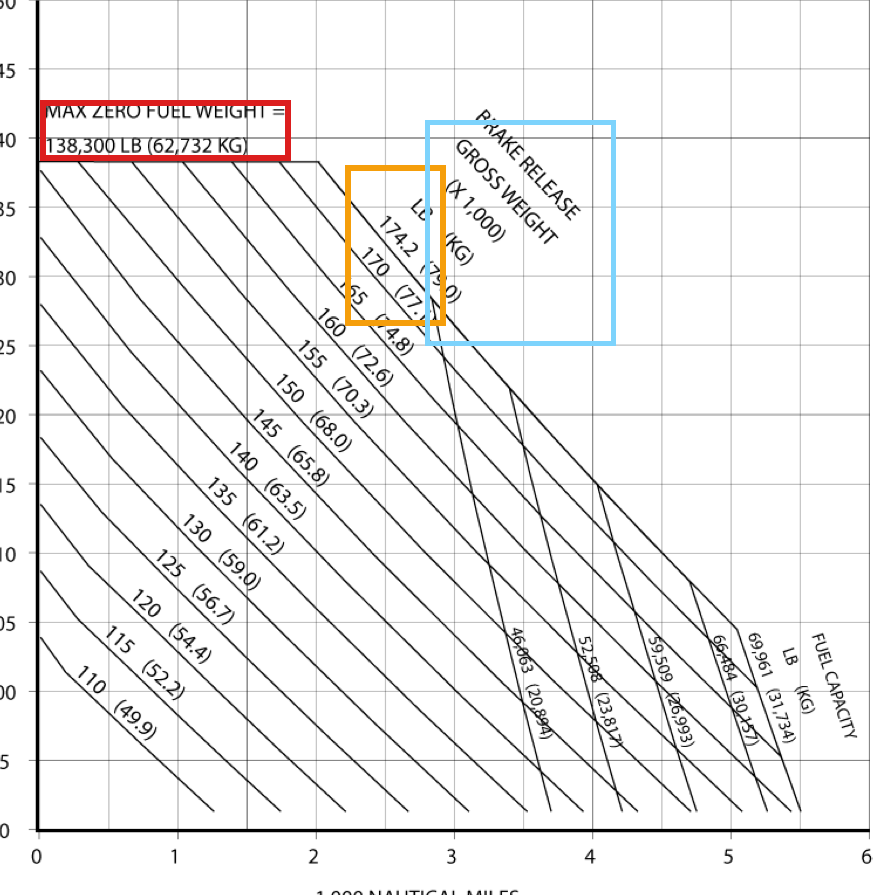
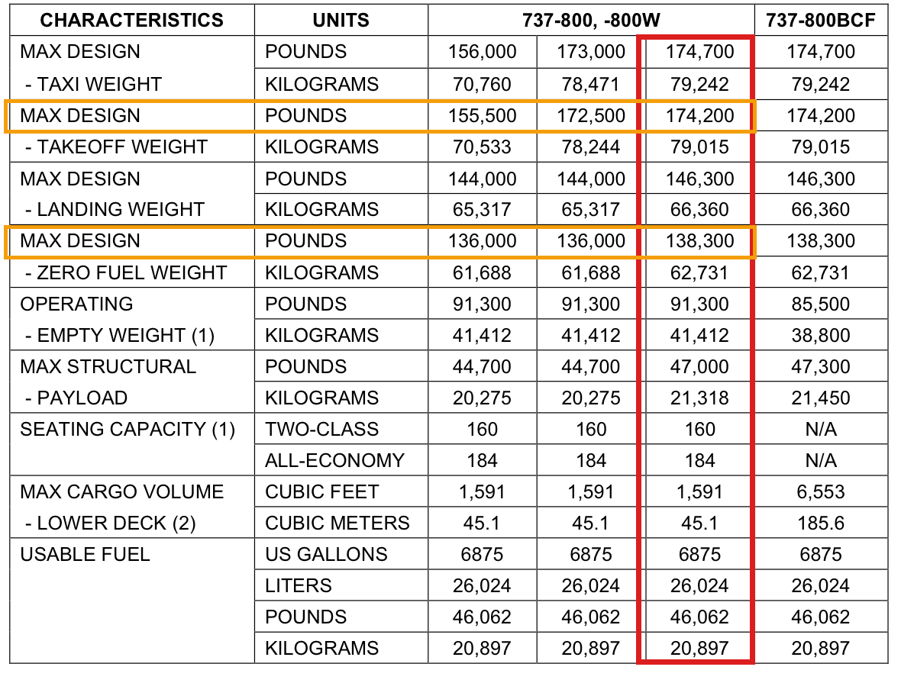

I’ve been working on setting up the “Digitization module”. The goal here is to
determine what inputs we actually need for TASOPT
Going through the APD for a 737-800 and digitizing that data.
Creating a property based tests suite
Steps 2-3 are done semi automated / supervised. Now we must make an agent with a light harness to do these on its own. first test it with the same 738 data, then on a different aircraft in the same APD; then on a new APD for a different aircraft.
I first wrote and asked the agent to grill-me. It was able to come up with good questions () to fill in the gaps (for eg how to determine the sizing mission, which helped me write a test). I was able to also come up with a plan for the agent+harness setup.
Here is the example of the gross weight column selection test.

APD p. 3-5. The payload/range diagram says max zero fuel weight is 138,300 lb / 62,732 kg, and the relevant brake-release gross weight line is 174.2 thousand lb / 79.0 thousand kg.

APD p. 2-4. The general characteristics table has multiple 737-800/-800W gross weight columns. The red column is the one that matches both values from the payload/range diagram.
The test is basically:
Read the APD p. 3-5 payload/range constraints.
Use MZFW = 138,300 lb and max brake-release gross weight = 174,200 lb as the target values.
Read all 737-800/-800W gross weight options from APD p. 2-4.
Find rows where max_zero_fuel_weight_lb == 138300 and max_takeoff_weight_lb == 174200.
Assert that there is exactly one match.
Assert that the matching option is C, then check the related values: max taxi weight 174,700 lb, max landing weight 146,300 lb, max structural payload 47,000 lb.
So the point of the test is not just “pick option C”; it is to make the column choice reproducible from two different places in the APD.
Right now the most important thing is to take my time with the input classification and then move to the digitization process. I don't want to miss any inputs that can be derived from the docs.
Attached files
Update 001
Updating the project outline using grill-me
18 June 2026
I wrote an for my project specifically detailing exactly what the aim, steps, and targets are for the project. I also added specific instructions to slow the project development to a step-by-step basis since I think these models want to complete everything you ask right away. I want to add tests, validation, and documentation after each small step.
I used grill-me and asked the agent to read and analyse TASOPT to get context, and then go through my outline. What it came up with was quite interesting and useful. The overall analysis was useful because the agent was able to predict future problems, such as the need to classify each TASOPT input by whether it should be fixed from data or calibrated. It was also still jumping the gun on some things, like the optimization problem setup.
I answered its questions, updated the outline, and then ran the same thing with grill-me once more to further fine tune the project outline. I also asked it to make an to see exactly what it thinks of the project, edit it, and avoid missing details I had not added.
I updated the website project page using the outline. At first the website was laid out like a tech product, but I asked it to make it more like an academic paper/project.
My next task is to carefully read the website and OUTLINE-WITH-AGENT.md file, and then correct any miscommunication with the agent.
Attached files
Earlier notes
Earlier note
Made TASOPT V&V the current project
Pointers
Changed my project to TASOPT V&V. I planned to fine tune the about page once I thought about my own project and scope a bit more. I also installed Playwright to have a better time doing web development with AI.
Summary
We added TASOPT Verification and Validation as the current project, pointed the homepage to it, and kept the contrail project as a previous project.
I didn't use AI to add these skills, just opened the skills directory on VS Code and added them, which was easier.
I am yet to use them on my work.
Earlier note
Made portfolio website
As someone who has had experience in web development this was actually much harder than I thought.
I kept feeling like I could do it faster and better than the AI.
I guess this is what Prashanth and Ian feel when they tell me to do something.
Attached file
DIGITIZE.md
Attached file
Digitization module — grill-me response
Attached file
Gross-weight column selection
Attached file
test_apd_gross_weight_column_selection.py
Attached data
apd_737800_gross_weight_options.csv
Attached data
payload_range_diagram_constraints.csv
Attached transcript
digitization-setup.txt
Attached file
OUTLINE.md
# TASOPT V&V against real aircraft
This project seeks generate an automated pipeline to compare and validate TASOPT against real aircraft.
Using available data such as airport planning documents and emissions databank, the framework shall design and size and aircraft given its geometry, mission parameters (range and payload), and engine parameters. The validation will be against not only the weights (empty weight, WMTO, fuel weight), but more importantly match the aircraft mission requirements and performance. The main validation will be against the payload range diagrams and the emission databank points for the engine.
The goal should be to assimilate and verify all inputs for TASOPT that can be validated against real publically available data. No information should be made up to fit the validation. A perfect representation is not the goal. It is ok to be off by a couple percent, as long as the mission requirements are captured
The steps to design, size and validate the aircraft should be
1. **Get all relevant input and validation data**: Get airport planning documents, engine emissions databank, etc. and extract data from it. Relevent data includes geometry inputs, weights, payload range diagram. Determine what the design/sizing mission payload and range is. Additionally determine what the off design mission payload and ranges are going to be using the payload range diagram.
2. **Update input toml file**: After getting the data go through the baseline toml input file for TASOPT and update the inputs. Throughout the framework, the only changes in the code should be in the TOML input files, no changes in the TASOPT code itself. UNLESS a bug/error in the code is found and then we can fix it.
- no TASOPT source edits without permission,
- no hidden runtime mutations unless documented
- scripts may mutate loaded ac for analysis, but those mutations must be reproducible and traceable.
3. **Load aircraft model (`read_aircraft_model`) and size the aircraft (`size_aircraft!`), fly off design missions (`fly_mission!`)**
4. **Get baseline unoptimized output and compare to weights, payload range diagram, EDB**
5. **Calibrate only approved undocumented/model-assumption inputs if needed**: Revise only inputs whose provenance category permits calibration, record every change in the data ledger, identify which calibration target motivated the change, and re-run all validation metrics. MTOW is a validation target, not a calibration target.
6. **Validate the baseline/calibrated aircraft**: Compare against held-out weights including MTOW, off-design payload-range points, EDB LTO thrust/fuel-flow points, and takeoff field length if available.
7. **Optional design optimization study**: Optimize the aircraft to minimize weighted multi-mission fuel burn with constraints, but report this separately from V&V. The optimized aircraft is compared to the validated baseline, not treated as the real-aircraft validation case.
This project needs to be done carefully and slowly. After each small step we will stop and analyse. After each small step we will add thorough property based tests and write reflections and document it properly.
## Project stages
### Stage 0: TASOPT analysis and input classification
Each input in the TOML file needs to classified as:
1. Observed/certified inputs — APD geometry, MZFW, payload, fuel capacity, EDB fuel flow.
2. Derived inputs — passenger payload from APD payload point / pax count, fuel density from APD mass/volume.
3. Model assumptions — reserves, cruise CL etc.
4. Calibration knobs — inputs explicitly tuned to match outputs (TO BE DETERMINED).
5. Validation targets — held-out quantities used to assess the model, including MTOW, off-design payload-range points, EDB LTO thrust/fuel-flow points, and takeoff field length if available.
### Stage 1A: Baseline B737-800 reconstruction with CFM56-7B
Reconstruct a B737-800-like TASOPT model from APD/EDB data, derived quantities, and documented assumptions. The source of truth should be the TOML file plus any explicitly documented post-load mutations.
### Stage 1B: Supervised calibration using only approved knobs
If the baseline model misses required constraints or calibration targets, adjust only inputs classified as calibration knobs. Every adjustment must be recorded with source/provenance, motivation, and affected metrics. MTOW remains a validation target, not a calibration target.
### Stage 1C: Baseline/calibrated V&V for B737-800 with CFM56-7B
Validate the aircraft against held-out metrics: MTOW, off-design APD payload-range points, EDB LTO thrust/fuel-flow points, and takeoff field length if available. Report digitization uncertainty and model error separately.
### Stage 1D: Optional constrained design optimization study
After V&V, optimize only allowed undocumented/model-assumption variables or clearly declared design variables under constraints such as span, fuel volume, and mission feasibility. Report this as a design study relative to the validated baseline, not as the primary real-aircraft validation.
### Stage 2: Build automated framework to design, size and V&V other aircraft
### Stage 3: Automated V&V for a B777-300ER with GE90
### NOTES
Use `julia --project="/Users/aditeyashukla/Dropbox/Mac (2)/Documents/LAE/TASOPT.jl/"` to run TASOPT in julia. Save all relevant scripts, data in `"/Users/aditeyashukla/Dropbox/Mac (2)/Documents/Developer/LAE_AI/TAS_VV"`. Don't add/edit anything in `"/Users/aditeyashukla/Dropbox/Mac (2)/Documents/LAE/TASOPT.jl/"` without user permission.
Attached file
OUTLINE-WITH-AGENT.md
# TASOPT V&V against real aircraft — agent-driven project outline
## 1. Project purpose
This project will build an AI-agent-driven, auditable pipeline to design, size, and verify/validate TASOPT aircraft models against real aircraft using public data.
The first supervised case is a Boeing 737-800-like model with CFM56-7B-family engines. The broader objective is to generalize this into an automated framework that can ingest public aircraft/engine data, construct TASOPT input files, run TASOPT sizing and off-design missions, compare outputs to validation targets, and document every assumption and calibration decision.
A suitable final validation claim is:
> We validate that a TASOPT B737-800-like model, parameterized only from APD/EDB data plus documented assumptions, can reproduce APD payload-range behavior and EDB LTO thrust/fuel-flow within X%.
The value of `X` will be determined only after data extraction uncertainty, digitization repeatability, and baseline model behavior are quantified.
## 2. Scientific questions
1. **Input reconstruction:** Can public data and documented assumptions define a TASOPT aircraft model without hidden fitting?
2. **Aircraft-level validation:** Does the sized aircraft recover held-out aircraft-level quantities, especially MTOW and off-design payload-range points?
3. **Engine operating-point validation:** Does the TASOPT engine model reproduce EDB LTO thrust and fuel-flow at the four standard operating points?
4. **Automation:** Can an AI agent perform the end-to-end process reproducibly while maintaining provenance, tests, and documentation?
5. **Generalization:** Can the supervised B737-800 process become a reusable pipeline for other aircraft such as the B777-300ER/GE90?
## 3. Scope and boundaries
### In scope
- Public data extraction from airport planning documents, emissions databank records, and similar sources.
- TASOPT TOML input generation and modification.
- TASOPT model loading via `read_aircraft_model`.
- Aircraft sizing via `size_aircraft!`.
- Off-design mission evaluation via `fly_mission!`.
- Payload-range reconstruction and comparison.
- EDB LTO thrust/fuel-flow comparison.
- Data ledger, provenance tracking, tests, outputs, and reflections.
- Agent-driven orchestration of the pipeline with human review gates.
### Out of scope for initial V&V claim
- Claiming that TASOPT fully validates the real Boeing 737-800 in all respects.
- Treating optimized designs as real-aircraft validation cases.
- Validating NOx/HC/CO emission indices unless an emissions model is added.
- Editing TASOPT source without explicit user permission.
## 4. Data sources and target quantities
### Airport planning document data
Used for:
- Geometry: fuselage length, fuselage diameter, span, height, gear geometry if available.
- Weights: MZFW, fuel capacity, payload quantities, MTOW as validation target.
- Payload-range chart: sizing point and off-design validation points.
- Takeoff field length if available and variant-consistent.
### Emissions databank data
Used for:
- Engine variant identification.
- Rated thrust.
- LTO fuel-flow at idle, approach, climb, and takeoff.
- NOx/HC/CO EI values as reference metadata only for now.
### TASOPT documentation/code
Used for:
- Mapping data to TOML fields.
- Understanding model assumptions and array outputs.
- Defining valid runtime calls and output extraction.
## 5. Data provenance categories
Every relevant TOML field and every runtime mutation must be classified before use.
1. **Observed/certified input**
- Directly from APD/EDB/certification-like sources.
- Examples: geometry, MZFW, fuel capacity, engine rated thrust, EDB LTO fuel-flow.
2. **Derived input**
- Computed from observed data using transparent equations.
- Examples: fuel density from fuel mass/volume, passenger weight from APD payload point divided by passenger count.
3. **Model assumption**
- Required by TASOPT or mission modeling but not directly specified by public data.
- Examples: reserves, cruise CL, detailed mission rules, some aerodynamic assumptions.
4. **Calibration knob**
- An input explicitly allowed to vary during supervised calibration.
- Must be approved before tuning and logged after every change.
5. **Validation target**
- Held-out quantity used to assess model performance.
- Includes MTOW, off-design payload-range points, EDB LTO thrust/fuel-flow, and takeoff field length if available.
Important rule: **MTOW is a validation target, not a calibration target.**
## 6. B737-800 design/sizing mission definition
The B737-800 model will be sized at the **selected-payload maximum-range point** on the APD highest-gross-weight payload-range line.
This point is:
- not the zero-range maximum payload point,
- not the max-payload range corner,
- not the zero-payload ferry range,
- but the maximum range for the selected sizing payload on the highest-gross-weight APD line.
This point is useful because it represents the mission capability the model must satisfy for the selected payload while operating near the fuel/MTOW constraint.
Payload-range points should be documented as:
1. Maximum structural payload.
2. Maximum-payload range corner.
3. Selected-payload maximum-range sizing point.
4. Zero-payload ferry range.
5. Any additional digitized off-design validation points.
## 7. Agent-driven architecture
The agent pipeline should be divided into specialized tasks. A single coding agent may implement these sequentially, but the responsibilities should remain distinct.
### 7.1 Data extraction agent
Responsibilities:
- Locate source documents.
- Record document title, revision, date, variant, page/table/figure numbers.
- Extract raw values and units.
- Digitize payload-range charts.
- Estimate digitization uncertainty and repeatability.
- Save raw and processed data under `TAS_VV/data/`.
Outputs:
- Raw data files.
- Processed CSV/JSON/TOML fragments.
- Extraction notes.
- Source ledger rows.
### 7.2 Provenance/classification agent
Responsibilities:
- Classify every data item and TOML field.
- Distinguish observed, derived, assumption, calibration, and validation target fields.
- Verify that all non-default TOML changes have ledger entries.
- Flag ambiguous or unclassified fields for human review.
Outputs:
- `references/data_ledger.csv` or equivalent.
- `references/input_classification.md`.
- Validation warnings for missing provenance.
### 7.3 TOML/model-building agent
Responsibilities:
- Start from the appropriate TASOPT template.
- Generate or update the aircraft TOML.
- Keep the TOML as the primary source of truth.
- Document any required post-load mutations.
- Avoid TASOPT source edits unless explicitly approved.
Outputs:
- Aircraft TOML files under `TAS_VV/models/`.
- TOML diff reports.
- Mapping from source data to TASOPT fields.
### 7.4 TASOPT execution agent
Responsibilities:
- Run Julia with `julia --project="/Users/aditeyashukla/Dropbox/Mac (2)/Documents/LAE/TASOPT.jl/"`.
- Load the aircraft with `read_aircraft_model`.
- Size with `size_aircraft!`.
- Evaluate off-design missions with `fly_mission!`.
- Export structured outputs.
- Detect convergence failures and infeasible missions.
Outputs:
- Sizing logs.
- Mission output CSVs.
- Payload-range curve outputs.
- LTO fuel-flow comparison outputs.
### 7.5 Validation/audit agent
Responsibilities:
- Compare TASOPT outputs to held-out validation targets.
- Separate digitization uncertainty from model error.
- Check MTOW, payload-range points, EDB LTO thrust/fuel-flow, and field length if available.
- Produce validation reports with clear pass/fail/needs-review labels.
Outputs:
- Validation tables.
- Error plots.
- Report markdown/PDF/HTML.
- Machine-readable validation summary.
### 7.6 Testing agent
Responsibilities:
- Add property-based and regression tests after each small step.
- Test unit conversions, weight bookkeeping, payload-range monotonicity, file-write boundaries, and provenance completeness.
- Ensure scripts are reproducible.
Outputs:
- Tests under `TAS_VV/tests/`.
- Test logs.
- CI-like local run scripts.
### 7.7 Reflection/documentation agent
Responsibilities:
- Write short reflections after each completed step.
- Summarize what changed, what was learned, what failed, and what is uncertain.
- Keep the project website and outline synchronized with actual progress.
Outputs:
- `TAS_VV/reflections/` notes.
- Website updates.
- Stage completion notes.
## 8. Pipeline stages
### Stage 0: TASOPT analysis and input classification
Goals:
- Understand TASOPT inputs, outputs, and mission execution.
- Create the data ledger format.
- Classify all baseline TOML fields.
- Define allowed calibration knobs.
Exit criteria:
- Data ledger template exists.
- TOML classification framework exists.
- Initial B737 source list exists.
- Validation target list is frozen for Stage 1.
### Stage 1A: Baseline B737-800 reconstruction with CFM56-7B
Goals:
- Extract B737-800 APD geometry, weights, fuel capacity, and payload-range points.
- Extract CFM56-7B-family EDB thrust/fuel-flow data.
- Build a baseline TASOPT TOML.
- Run initial sizing and mission evaluation.
Exit criteria:
- Baseline TOML runs without hidden mutations.
- Initial TASOPT outputs are exported.
- Differences from APD/EDB targets are quantified.
### Stage 1B: Supervised calibration using only approved knobs
Goals:
- If needed, adjust only pre-approved calibration knobs.
- Record every change with motivation and affected metrics.
- Do not tune MTOW directly.
Exit criteria:
- Calibration log is complete.
- The model satisfies basic feasibility constraints.
- Validation targets remain held out.
### Stage 1C: Baseline/calibrated B737 V&V
Goals:
- Validate MTOW.
- Validate off-design payload-range points.
- Validate EDB LTO thrust/fuel-flow.
- Validate takeoff field length if reliable public data exists.
- Report model error and data/digitization uncertainty separately.
Exit criteria:
- Validation report generated.
- Pass/fail/tolerance discussion completed.
- Limitations documented.
### Stage 1D: Optional constrained design optimization study
Goals:
- Optimize weighted multi-mission fuel burn only after V&V.
- Constrain known APD quantities such as span and fuel volume.
- Vary only undocumented/model-assumption variables or clearly declared design variables.
Important: This is not the primary validation case. The optimized aircraft is compared to the validated baseline, not treated as the real B737-800.
### Stage 2: Automated framework for other aircraft
Goals:
- Convert the supervised B737 process into reusable scripts and schemas.
- Define agent prompts/checklists.
- Support multiple aircraft classes and variants.
Exit criteria:
- New aircraft can be initialized from a data ledger.
- TOML generation and validation reports are mostly automated.
### Stage 3: B777-300ER with GE90
Goals:
- Apply the automated framework to a wide-body aircraft.
- Carefully handle aircraft and engine variants.
- Compare performance against APD payload-range and GE90 EDB fuel-flow data.
Exit criteria:
- B777-300ER validation report.
- Lessons learned comparing narrow-body and wide-body cases.
## 9. Tests and invariants
### Unit and conversion tests
- lbf ↔ N.
- kg mass ↔ N force using consistent gravity.
- nmi ↔ m.
- fuel volume/mass/density conversions.
### Weight bookkeeping tests
- `Wempty = WMTO - Wfuel - Wpay` where applicable.
- Off-design `WTO = Wempty + Wpay_mission + Wfuel_mission`.
- Feasible missions satisfy `Wfuel <= Wfmax`.
### Payload-range tests
- At fixed range, feasible payload should not increase when constraints become stricter.
- At fixed payload, feasible range should not increase when payload increases.
- Bisection methods should be deterministic within tolerance.
### Provenance tests
- Every non-default TOML field must have a ledger entry.
- Every calibration knob must have approval and a change log.
- Every validation target must be frozen before calibration.
### File boundary tests
- Scripts write only under `TAS_VV/` unless explicitly approved.
- TASOPT source files are not modified without user permission.
## 10. Deliverables
- Data ledger for each aircraft.
- Input classification report.
- Aircraft TOML files.
- Extraction scripts and notes.
- TASOPT run scripts.
- Validation comparison scripts.
- Property/regression tests.
- B737 V&V report.
- Website project page and reflections.
- Automated framework for follow-on aircraft.
## 11. Working directories and execution
Project workspace:
```text
/Users/aditeyashukla/Dropbox/Mac (2)/Documents/Developer/LAE_AI/TAS_VV
```
TASOPT repository:
```text
/Users/aditeyashukla/Dropbox/Mac (2)/Documents/LAE/TASOPT.jl/
```
Julia command:
```bash
julia --project="/Users/aditeyashukla/Dropbox/Mac (2)/Documents/LAE/TASOPT.jl/"
```
Rule: do not add/edit files in the TASOPT repository without explicit user permission, except for reading code/documentation.
Attached file
TRANSCRIPT.md
# Transcript — TASOPT V&V project planning and website update
This transcript records the main project-planning conversation used to shape the TASOPT V&V project page and outline.
## 1. Initial project outline review
**Human:** I have written an outline doc for a TASOPT V&V project. Read it, inspect TASOPT code/documentation, and grill-me given the project, goals, and steps.
**Agent:** Reviewed `TAS_VV/OUTLINE.md`, TASOPT documentation, sizing/mission/input code, and existing B737 V&V scripts. Main critique: the project is viable, but it needs strict separation between observed inputs, derived inputs, assumptions, calibration knobs, and validation targets. Warned that “fine tuning” can become curve fitting unless governed by a data ledger and held-out validation targets.
## 2. Scientific claim and design mission
**Human:** Confirmed that the final report should say something like: “We validate that a TASOPT B737-800-like model, parameterized only from APD/EDB data plus documented assumptions, can reproduce APD payload-range and EDB LTO fuel-flow within X%.” Asked whether the selected design mission makes sense: the maximum range at selected payload, not maximum payload and not ferry range.
**Agent:** Agreed, but recommended naming it carefully as the “selected-payload maximum-range sizing point” to avoid confusion with ferry range. Clarified that calibration and validation must remain separate, and that EDB comparison should currently use thrust and fuel-flow only, not emissions indices.
## 3. MTOW as validation target
**Human:** Clarified that MTOW should be a validation target and asked to update the staged plan.
**Agent:** Updated `TAS_VV/OUTLINE.md` so MTOW is explicitly listed as a validation target, not a calibration target. Reworked stages into Stage 0, Stage 1A, Stage 1B, Stage 1C, Stage 1D, Stage 2, and Stage 3.
## 4. Website project page
**Human:** Asked to create/rebuild the project page on the Aditeya website from scratch using the outline.
**Agent:** Rebuilt the TASOPT project page, first as a project/product-like page. Added local B737 payload-range and geometry images, and updated homepage project links.
**Human:** The page looked too much like a product description. Asked to make it more like an academic project/paper with distinct structure answering scientific questions.
**Agent:** Reworked the page into a paper-style layout: title, abstract, scientific questions, figure panel, methods, validation matrix, sizing mission, uncertainty/tests, and study stages.
## 5. Agent-driven pipeline emphasis
**Human:** Reminded that the real goal is an AI-agent-driven automated pipeline to design and V&V aircraft models. Also liked the selected-payload maximum-range section and requested an interactive visualization.
**Agent:** Updated the page to emphasize the agent-driven automated pipeline. Added an agent system section and an interactive payload-range visualization explaining maximum payload, maximum-payload range, selected-payload maximum-range sizing mission, and ferry range.
## 6. Detailed agent outline
**Human:** Asked for `OUTLINE-WITH-AGENT.md` and then to use Playwright to inspect/fix the website.
**Agent:** Created `TAS_VV/OUTLINE-WITH-AGENT.md`, describing scientific questions, scope, data sources, provenance categories, agent roles, pipeline stages, tests, deliverables, and execution directories. Used Playwright screenshots to detect and fix layout/overflow issues.
## 7. Updates page and payload-range visualization
**Human:** Asked to combine updates and reflections into one Updates tab, add a new update from `TAS_VV/updates/001.md`, and make the payload-range visualization more interactive and useful.
**Agent:** Combined navigation into About and Updates. Rebuilt `updates.html`, migrated earlier reflections into modals, added Update 001, uploaded/linked `OUTLINE.md` and `OUTLINE-WITH-AGENT.md`, redirected `reflections.html` to `updates.html`, and improved the payload-range visualization with a payload slider, dynamic point, live metrics, and constraint bars.
## 8. Attached files in modals
**Human:** Asked to make the attached files show up in modals, attach the transcript of this conversation too, and style attached files in monospace font.
**Agent:** Added modal-based attachments for `OUTLINE.md`, `OUTLINE-WITH-AGENT.md`, and this transcript, using monospace preformatted styling.